Sou Gustavo Henrique, um profissional híbrido que une Design UI/UX e Desenvolvimento Full-Stack. Meu diferencial é dominar todo o ciclo de um produto digital: crio a identidade visual, prototipo no Figma e construo a aplicação de ponta a ponta (Front-End e Back-End).
Foco em traduzir com precisão a necessidade do projeto: graças à minha bagagem em design consigo garantir que o produto final seja exatamente igual ao projetado.
Design & UI/UX: Figma, Identidade Visual e Prototipagem de alta fidelidade.
Front-End: HTML/CSS/JS, TypeScript, React e Angular.
Back-End: Python e Node.js.
DevOps & Infra: Docker, Git e GitHub.
Segurança & Redes: Navegação segura/privacidade (Tor Browser / Rede Onion) e consumo de APIs.
